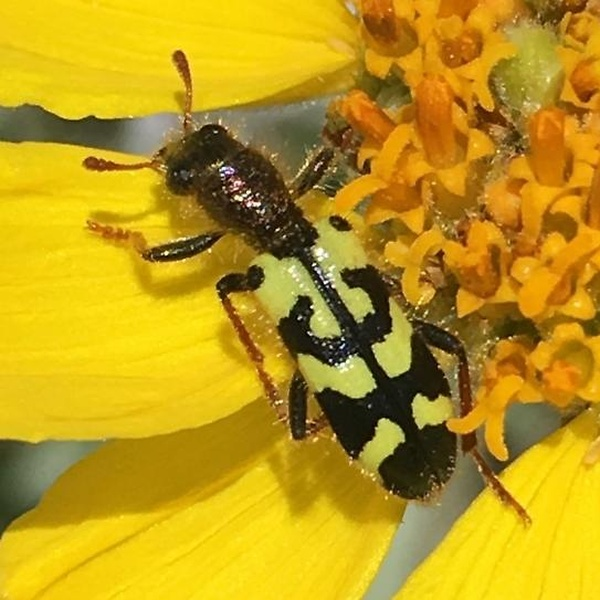

Trichodes ornatus
Common names
Ornate Checkered Beetle
Common Checkered Clerid
Family
Cleridae
Family common name
Checkered beetles
Commonly observed
Year round but especially March to August
Size
About 1.5 cm
Range Map
Seasonality